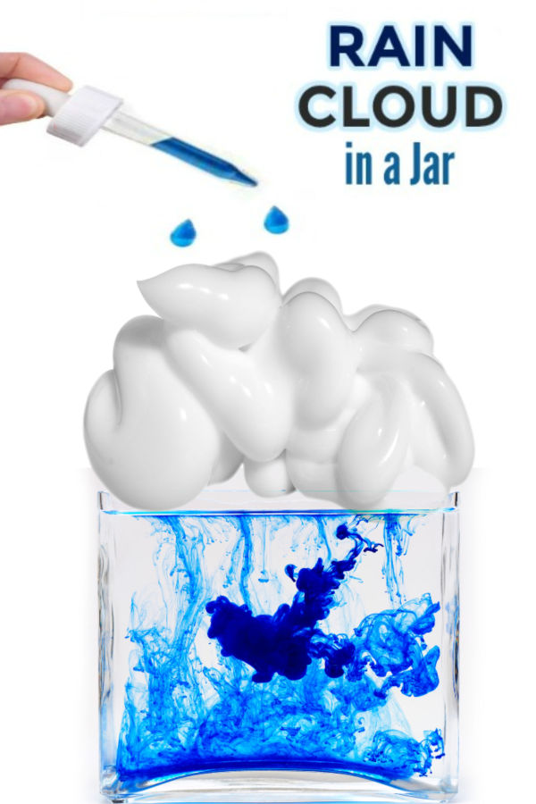

Miniature Rain Clouds

Description
Mixing wandwork and potions, you can call the rain to come in a jar. This magical rain can inspire wonder is said by some to be used to prophesize. The tendrils of rain that fall can be read much like tea leaves to predict the future of the casting witch or wizard.
Ingredients
- Pegasus Tears (tap water)
- Bottle Clouds (shaving cream)
- Gilly Water (tap water mized with blue food coloring
Steps
- Fill a clear cylindrical container (jar) with Pegasus Tears up to 1 inch from the top.
- Fill the rest of the container (up to the top and covering the Tears) with Bottled Clouds.
- Using an eye dropper, drip several drops of Gilly Water over the clouds. It will take a minute or so for the Gilly Water to make its way through the clouds.
- Point your wand at the potion and say, "Accio Rain".
- The Gilly Water will fall through the clouds making "rain" in the Pegasus Tears.